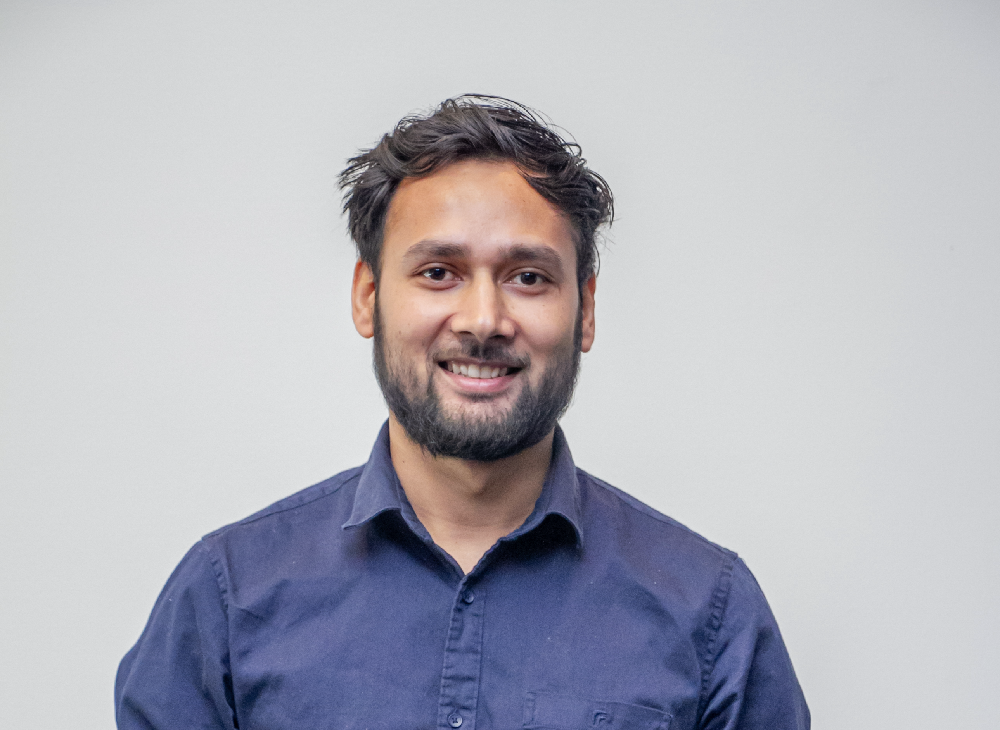

2026
PALM: Phoneme-Level Prosody and Lexical Feature Augmented Dataset Construction Pipeline for Language and Speech Studies
International Conference on Smart Applications, Communications and Networking (SmartNets), 2026
PaperPhD Student | Computer Science · AI in Learning Sciences

I am a first-semester Computer Science Ph.D. student at Kennesaw State University. My research lies at the intersection of artificial intelligence and the learning sciences. I investigate four interconnected themes—the 4Cs: cognitive processes, computational thinking, critical thinking, and creative machines—to develop trustworthy, human-centered AI systems that support learning and educational practice. I am also interested in how neuro-symbolic approaches and knowledge representation can inform agentic AI systems for adaptive, personalized learning.
Previously, I earned my M.S. in Computer Science at East Tennessee State University, where I worked with Dr. Shehenaz Shaik and Dr. Ahmad Al Doulat on context-aware educational question answering. I received my bachelor’s degree in Computer Science from Tribhuvan University in Nepal.
Research interests AI in Learning Sciences Language and Cognition Neuro-symbolic AI Knowledge representation Adaptive learning systems
International Conference on Smart Applications, Communications and Networking (SmartNets), 2026
PaperThe Open Technology in Education, Society, and Scholarship Association Conference, 5(1), 2026 · pp. 1–6
PaperInternational Conference on Smart Applications, Communications and Networking (SmartNets), 2025
PaperIEEE SoutheastCon, 2025 · pp. 261–266
PaperIEEE SoutheastCon, 2025 · pp. 589–594
PaperKennesaw State University
AI in Learning Sciences
East Tennessee State University
GPA: 4.0 / 4.0
Tribhuvan University
Distinction · 80.12%